Introduction
In October 2025, NVIDIA became the first company in history to reach a market capitalization of $5 trillion (source). Looking at the stock price chart of the company (on Wikimedia), the major increases often conincide with remarkable achievements of deep learning: the release of ChatGPT, or DeepMind’s AlphaGo. This coincidence is hardly surprising, as NVIDIA’s GPU (Graphic Processing Unit) is the dominant hardware on which relies the training and deployment of these models.
In fact, most algorithmic components behind deep learning, such as backpropagation and deep convolutional neural network, have been discovered in the period from 1960s to 1980s [1]. Meanwhile, the widely recognized success of deep learning came only in the 2010s, due to the availability of appropriate training data and hardware. Sara Hooker coined the term Hardware Lottery [1] to describe this phenomenon: a research idea succeeds partly because it happens to fit the hardware that is available.
For decades, Moore’s law delivered continuous performance improvements and allowed algorithm research to proceed independently of hardware concerns. As shown in the figure below, however, that trend ended around 2010.
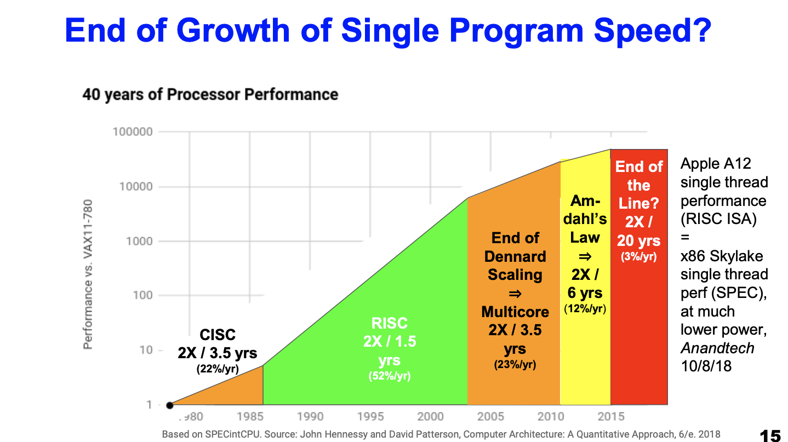
Meanwhile, the computation demand of deep learning has continued to grow exponentially, even accelerating, as shown below. The divergence between hardware improvement and algorithmic demand has become dramatic.
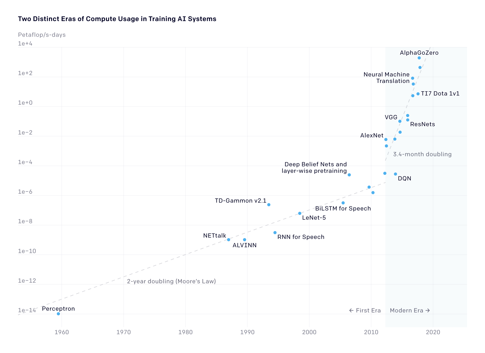
This mismatch has spurred a wave of specialized accelerators: GPU, Google’s TPU [4], and chips from startups like Cerebras and Graphcore. These are all digital ASICs, circuits optimized for fast parallel arithmetic. But digital computing is not the only path forward.
Analog in-memory computing with memristor
The dominant cost in digital neural network computation is not the arithmetic itself, it is moving the data. A 16-bit floating-point multiplication costs roughly 1 pJ, but fetching a value from DRAM costs roughly 1 nJ: a 1000× energy gap [6]. Every time a weight matrix must travel from memory to the processor, the bulk of the energy budget is consumed before a single multiply-accumulate is performed.
Analog in-memory computing eliminates this bottleneck by keeping weights in place and performing computation directly inside the memory array. Geoffrey Hinton described this “mortal computation” vision concisely [5]:
An energy efficient way to multiply an activity vector by a weight matrix is to implement activities as voltages and weights as conductances. Their products, per unit time, are charges which add themselves. This seems a lot more sensible than driving transistors at high power to model the individual bits in the digital representation of a number.
This type of computation depends on a memory device called memristor: a programmable resistor whose conductance state is non-volatile and can directly encode a weight value. Three prominent types are OxRAM/CBRAM (conductive filament devices), PCM (phase change devices), and MRAM (magnetic tunnel junctions). All three share the essential property that their conductance can be tuned to multiple levels and will hold that value without power.
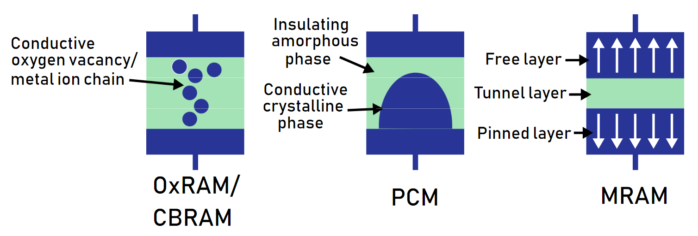
Memristor crossbar array
Memristors arranged into a crossbar array perform matrix-vector multiplication in a remarkably elegant and parallel way, naturally exploiting two fundamental laws of electronics [7], [8]. Ohm’s law (V = IR) implements scalar multiplication. According to Kirchhoff’s current law, currents summing at a node implements accumulation. Together, they allow a crossbar to compute a full matrix-vector product in a single physical step:
\[\begin{align*} \begin{bmatrix} G_{1,1} & G_{1,2} \\ G_{2,1} & G_{2,2} \\ G_{3,1} & G_{3,2} \end{bmatrix} \bullet \begin{bmatrix} V_1 \\ V_2 \end{bmatrix} = \begin{bmatrix} I_1 \\ I_2 \\ I_3 \end{bmatrix} \end{align*}\]
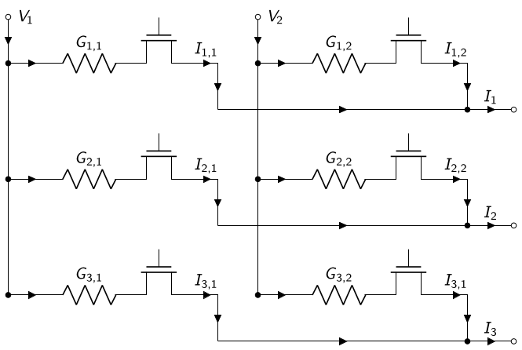
Each resistor in the array is a memristor. The conductance \(G_{i,j}\) encodes the weight at row \(i\), column \(j\). Input values are applied as column voltages \(V_j\), and the output currents \(I_i\) accumulate along each row, all in parallel, all without ever moving the weight data to a separate processor.
Proposition: Analog in-memory circuit design for Adaptive Low-Rank Ensemble (ALoRE) with memristor
Crossbar arrays handle vector-matrix multiplication elegantly, but implementing ALoRE (link available soon) on analog hardware requires one additional operation: element-wise (Hadamard) multiplication between vectors. No existing memristor scheme supports this natively. This post presents the Memristor Hadamard Multiplier (MemHaM), a novel analog circuit block that fills this gap, and shows how combining it with a standard crossbar array in a three-stage pipeline enables the full ALoRE computation to run in-memory.
Method: Circuit design for Ensemble with rank-1 approximation
Low-rank Ensemble of neural networks
For simplicity of notation, this section focuses on dense layers of neural networks, with non-linear activation function omitted. For the same input \(\mathbf x\), an ensemble of size \(E\) has multiple parameter matrices \(\mathbf{W}^{[e]}\) and outputs \(\mathbf{y}^{[e]}\), one per ensemble member \(e\). Superscript \(e \in \{1, \dots, E\}\) corresponds to the ensemble member index:
\[\begin{align*} \mathbf{y}^{[e]} = \mathbf{W}^{[e]} \bullet \mathbf{x}; \quad \forall e. \end{align*}\]
To reduce storage space, LoRA-Ensemble [11] approximates the ensemble member parameter matrices with low-rank matrix approximation. More precisely, instead of storing \(E\) full size parameter matrices, LoRA-Ensemble only stores a single full size matrix and \(E\) pairs of low-rank matrices. For each model in this ensemble, its effective parameter matrix \(\mathbf{\tilde W}^{[e]}\in\mathbb{R}^{N \times M}\) is formed by the matrix product between a tall low-rank matrix \(\mathbf{T}^{[e]} \in \mathbb{R}^{N \times R}\) and a horizontal low-rank matrix \(\mathbf{H}^{[e]} \in \mathbb{R}^{R \times M}\), followed by an element-wise binary operation with a matrix \(\mathbf{S}\in\mathbb{R}^{N \times M}\), that is shared between all ensemble members. This binary operation, is the combination operator that can be either Hadamard product \(\odot\) or addition \(+\). The effective parameter matrix of each ensemble member, for the multiplication and addition combination operator, is:
\[\begin{align*} \mathbf{y}^{[e]} = \mathbf{\tilde W}^{[e]} \bullet \mathbf{x} = \bigl[ (\mathbf{T}^{[e]} \bullet \mathbf{H}^{[e]}) \odot \mathbf{S} \bigr] \bullet \mathbf{x}; \quad \forall e \\ \mathbf{y}^{[e]} = \mathbf{\tilde W}^{[e]} \bullet \mathbf{x} = \bigl[ (\mathbf{T}^{[e]} \bullet \mathbf{H}^{[e]}) + \mathbf{S} \bigr] \bullet \mathbf{x}; \quad \forall e \end{align*}\]
Rank-1 ensemble computation
Prior to LoRA-Ensemble, BatchEnsemble [10] is the specific case with approximation rank equal to one and multiplication combination operator.
\[\mathbf{\tilde W}^{[e]} = (\mathbf{t}^{[e]} \otimes \mathbf{h}^{[e]'}) \odot \mathbf{S}\].
Here, \(\mathbf{S}\) is the shared matrix common to all members, and \(\mathbf{t}^{[e]}, \mathbf{h}^{[e]}\) are member-specific rank-1 approximation vectors. \(\otimes\) denotes vector outer product, and \(\odot\) element-wise matrix multiplication. The output for a given input \(\mathbf{x}\) is then:
\[\begin{align*} \mathbf{y}^{[e]} = \mathbf{W}^{[e]} \bullet \mathbf{x} = [ (\mathbf{t}^{[e]} \otimes \mathbf{h}^{[e]'}) \odot \mathbf{S} ] \bullet \mathbf{x}; \quad \forall e \in \{1, \ldots, E\}. \end{align*}\]
Rearranging this expression reduces it to just two elementary operation types, vector-vector element-wise multiplication (\(\odot\)) and vector-matrix multiplication (\(\bullet\)), which can be mapped directly onto physical hardware:
\[\begin{equation*} \mathbf{y}^{[e]} = [ \mathbf S \bullet ( \mathbf{x} \odot \mathbf{h}^{[e]} ) ] \odot \mathbf{t}^{[e]} \end{equation*}\]
Detail can be found in the appendix at the end of this post.
Mapping computation to hardware
This rearranged equation maps naturally to a three-stage pipeline, where each stage is responsible for one type of operation. Before describing the stages, here is the notation used in the circuit diagrams. The prefix I denotes a current and V denotes a voltage; for example, \(Ix_m\) is the \(m\)-th component of input vector \(\mathbf{x}\) encoded as a current. A superscript \(^*\) denotes an analog copy of a signal (e.g., \(Ix_m^*\) is a mirrored copy of \(Ix_m\)). Colors follow a consistent code throughout: blue for data input, violet for Multiplier A output, green for Crossbar B output, and orange for the final output of Multiplier C.
Step 1 & Multiplier A: \(\mathbf{a}^{[e]} = \mathbf{x} \odot \mathbf{h}^{[e]}\)
The input \(\mathbf{x}\) is encoded as a vector of currents \(Ix_m\), which flow through memristors programmed to the values of \(\mathbf{h}^{[e]}\). By Ohm’s law, the resulting voltage drops across the memristors give the element-wise product \(\mathbf{a}^{[e]}\).
Step 2 & Crossbar B: \(\mathbf{b}^{[e]} = \mathbf{\hat S} \bullet \mathbf{a}^{[e]}\)
The voltages \(\mathbf{a}^{[e]}\) from Step 1 are applied to the columns of the crossbar, which is programmed with the shared matrix \(\mathbf{\hat S}\). \(\mathbf{\hat S}\) is used intead of \(\mathbf{S}\) because the values of the shared matrix is encode as conductance or the inverse of resitance. More precisely, for each entry \(s_{i,j}\), the encoded value will be \(\hat s_{i,j} = 1 / s_{i,j}\). Row currents accumulate to produce the matrix-vector product \(\mathbf{b}^{[e]}\).
Step 3 & Multiplier C: \(\mathbf{y}^{[e]} = \mathbf{b}^{[e]} \odot \mathbf{t}^{[e]}\)
The currents \(\mathbf{b}^{[e]}\) from Step 2 flow through memristors programmed to \(\mathbf{t}^{[e]}\), and the resulting voltage drops give the final member output \(\mathbf{y}^{[e]}\).
A selector line \(Vl^{[e]}\) activates one ensemble member at a time. Cycling through \(e = 1, \ldots, E\) sequentially produces the output for each member.
Circuit implementation
The three stages are summarized in the figure below. Multiplier A and Multiplier C are the novel MemHaM blocks; Crossbar B is a standard memristor crossbar adapted with two circuit tweaks to handle the voltage and current handoff between stages correctly.
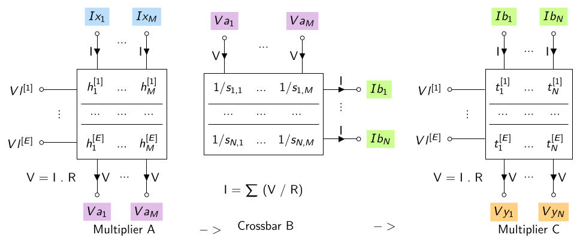
Multiplier A is an array of \(E\) rows × \(M\) columns of memristors, where each row stores one member’s vector \(\mathbf{h}^{[e]}\). When selector line \(Vl^{[e]}\) is activated, input currents \(Ix_m^*\) are routed through that row, producing voltage drops \(Va_m = Vtop - Ix_m^* \times h_m^{[e]}\) at each column.
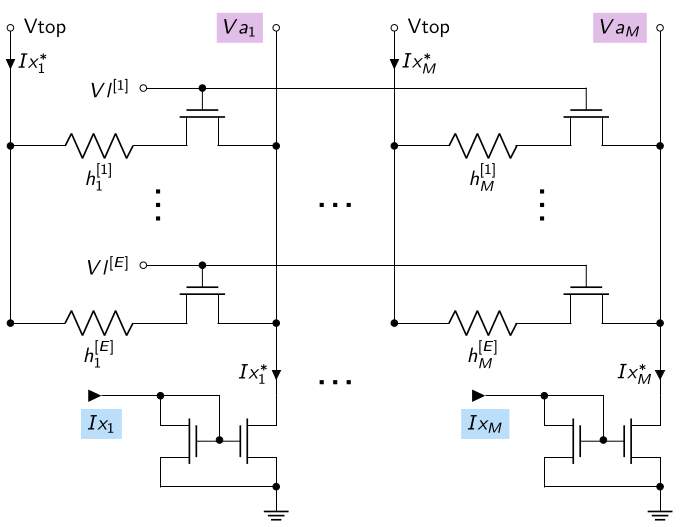
Crossbar B receives the Multiplier A output voltages via Op-Amp voltage followers (\(Abot\)) at the bottom of each column. A reference voltage \(Vtop\) is simultaneously held at the top of each row via current conveyors (\(Atop\)), each of which combines a voltage follower and a current mirror. The voltage difference across each memristor drives a row current \(Ib_n = \sum_m s_{n,m}^{-1}(Vtop^* - Va_m^*)\). Notably, unlike a standard crossbar where branch currents converge, here they diverge.
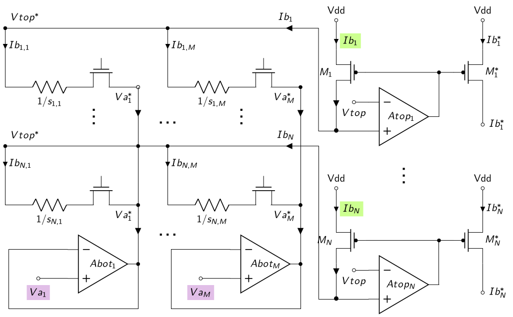
Multiplier C is symmetric to Multiplier A: the mirrored currents \(Ib_n^*\) from Crossbar B flow through memristors programmed to \(\mathbf{t}^{[e]}\), and the voltage drops give the final output \(Vy_n = Ib_n^* \times t_n^{[e]}\).
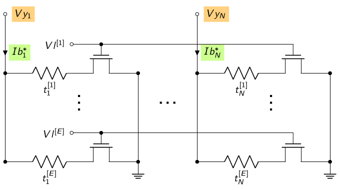
An important efficiency note: since a single-model crossbar already requires voltage regulation on all its columns and rows, the total Op-Amp count of the full MemHaM circuit equals that of a single-model crossbar. In contrast, an ensemble circuit of size \(E\) would increase the number of Op-Amp by \(E\).
Method: Circuit design for ensemble with low-rank approximation
Extending to approximation rank \(R > 1\) is conceptually straightforward. The rank-1 vectors \(\mathbf{t}^{[e]}, \mathbf{h}^{[e]}\) are replaced by low-rank matrices \(\mathbf{T}^{[e]} \in \mathbb{R}^{N \times R}\) and \(\mathbf{H}^{[e]} \in \mathbb{R}^{R \times M}\), and the computation becomes a sum over the rank dimension (more details in appendix):
\[\begin{align*} \mathbf y^{[e]} = \sum^R_{r=1} [\mathbf S \bullet (\mathbf x \odot \mathbf h^{[e]}_{r,:}) ] \odot \mathbf t^{[e]}_{:,r} \end{align*}\]
The three-stage pipeline applies identically inside each rank iteration \(r\). The adaptations to the circuit are minimal but targeted:
- Multipliers A and C each gain \(R\) rows per ensemble-member segment. one row per rank index. Each segment now encodes a full matrix for each ensemble member, rather than a single vector.
- The selector lines become two-level: \(Vl^{[e,r]}\) first selects member segment \(e\), then activates row \(r\) within that segment, selecting the appropriate row of \(\mathbf{H}^{[e]}\) and column of \(\mathbf{T}^{[e]}\).
- An Accumulator collects the Multiplier C output at each rank step, summing across \(r = 1, \ldots, R\) before storing the final result for member \(e\).
The figures below show the full circuit overview and the detail of one expanded ensemble-member segment.
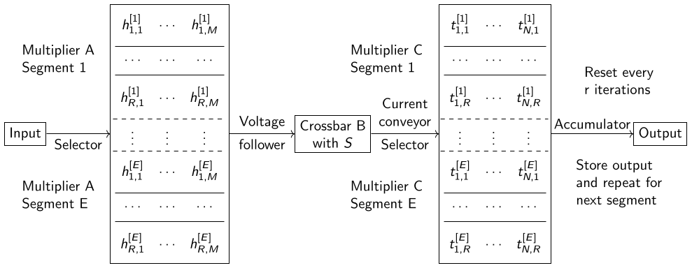
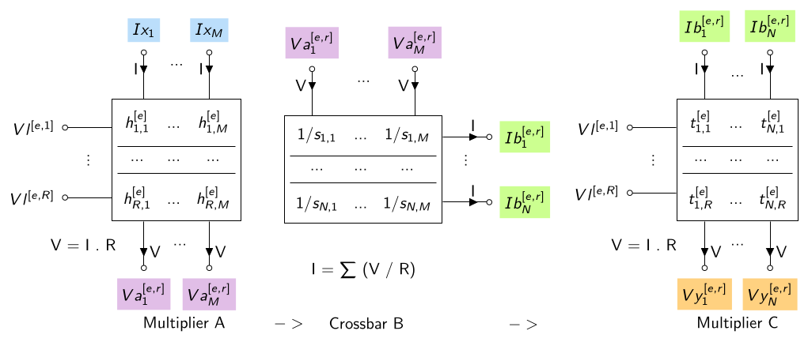
The internal design of each block remains the same as in the rank-1 case; only the height of the memristor arrays in Multipliers A and C grows by a factor of \(R\).
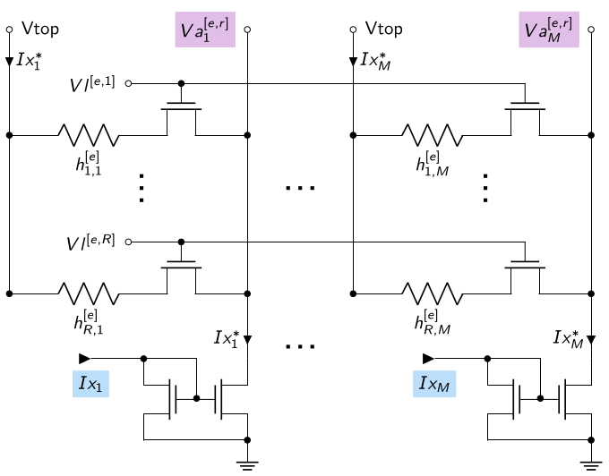
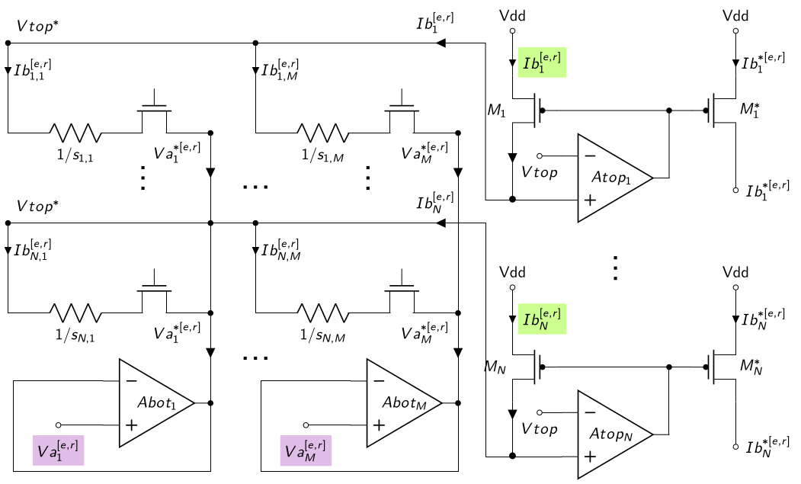
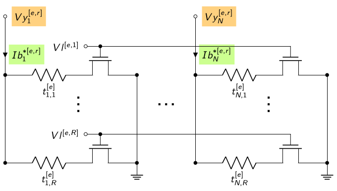
Usage procedure pseudocode
Algorithm: Usage Procedure for Memristor Hadamard Multiplier
For each ensemble member \(e = 1, \dots, E\):
Iterate through approximation ranks: For each rank \(r = 1, \dots, R\):
- Voltage Selection: Activate the specific voltage selector line \(Vl^{[e,r]}\) corresponding to the current member and rank.
- Current Injection: Inject input currents \(Ix_1, \dots, Ix_M\) into the memristor circuit.
- Accumulation: Feed the resulting output voltages \(Vy^{[e,r]}_1, \dots, Vy^{[e,r]}_N\) into the hardware Accumulator.
Result Retrieval: Read and store the \(N\) components from the Accumulator output as the final result vector \(\mathbf{y}^{[e]}\) for the ensemble member.
Reset: Reset the Accumulator to \(0\) before proceeding to the next ensemble member.
Experiment: Circuit simulation
Setup
We validate the circuit with Monte Carlo SPICE simulations in a 130nm CMOS technology, using 1.2V logic transistors and 1.8V selector transistors for the memristors. A single circuit instance (\(M = N = E = 16\), so all three blocks are \(16 \times 16\) matrices) is simulated over 32 independent runs.
- Input currents \(Ix\): sampled uniformly between 50 nA and 150 nA, then held constant across all runs.
- Memristor resistances in all three stages: sampled uniformly between 500 kΩ and 1.5 MΩ. This range keeps voltage drops across individual memristors at a few hundred mV, the threshold beyond which unintended programming can occur.
- Crossbar B output currents are scaled down by 10× using the transistor width ratio of the current mirror, so that resistance ranges remain consistent across all three stages.
- Op-Amps use an ideal model with gain 100; current mirrors use a 2-level cascoded topology to minimize copying error.
- Each selector pulse width is 3 μs (rise/fall 1 μs), giving a total of 5 μs per ensemble member.
Simulation result
The waveform below confirms basic circuit functionality. As selector lines \(Vl^{[e]}\) are pulsed one by one, the first output component \(Vy_1^{[e]}\) takes a distinct value for each ensemble member, reflecting the different resistance values programmed for each member.
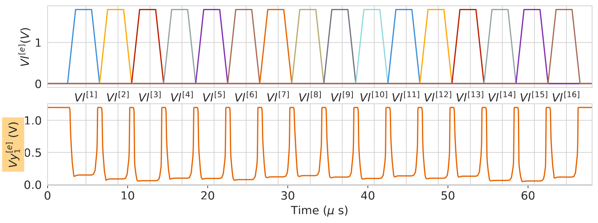
The violin plots below report the error ratio (observed / ideal) at five key circuit nodes, each marginalized over all 32 Monte Carlo runs and all 16 matrix columns or rows.
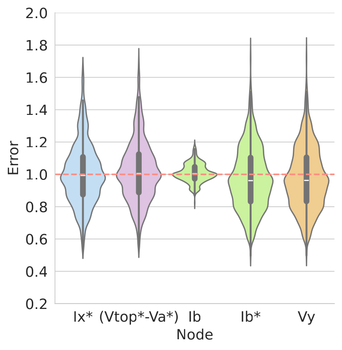
Node \(Ix^*\), input mirror: Error falls mostly within ±20%, though extreme cases can reach ±80%. Current mirrors are the dominant source of error throughout the pipeline, and their imprecision propagates downstream.
Node \((Vtop^* - Va^*)\), crossbar input voltage: Despite the large spread at \(Ix^*\), error variance barely grows at this node. The voltage followers for \(Vtop\) and \(Va\) each introduce a systematic negative offset of roughly 4–5 mV; since \(Va^*\) is subtracted from \(Vtop^*\), the two offsets mostly cancel, leaving a combined error of approximately 1 mV, negligible against the hundred-millivolt operating voltages.
Node \(Ib\), crossbar output current: Surprisingly, error variance drops dramatically here. Each row output is a dot product summing \(M\) terms, and with high-resistance memristors (MΩ range), the variance of each individual term is divided by \(s_{n,m}^2\), a massive attenuation. Formally, when memristor resistances are fixed: \(Var[b_n] = \sum_m s_{n,m}^{-2} \, Var[a_m]\). High resistance values thus act as a built-in variance reducer, an elegant side effect of the high-resistance operating point.
Node \(Ib^*\), mirrored crossbar output: Variance rises again here due to the second current mirror. A small negative bias is also introduced because the 10× down-scaling mirror is imperfect in practice.
Node \(Vy\), final output: Error tracks \(Ib^*\) closely, since Multiplier C contributes only a multiplicative factor from its resistance values.
The highest-leverage improvement is a better current mirror design, for example, through higher-order cascoding or regulated-cascode topologies. Beyond that, deliberately pairing low-resistance memristor technologies (such as OxRAM) for Multipliers A and C with high-resistance technologies (such as PCM) for Crossbar B would further exploit the variance-attenuation effect. In the longer term, embracing memristor variability within a Bayesian inference framework, where programming noise becomes an intentional source of stochasticity rather than an error, offers an ambitious but compelling direction. In-depth analysis and discussion can be found in the appendix.
Conclusion
This work introduces the Memristor Hadamard Multiplier (MemHaM), a novel analog in-memory circuit that implements vector-vector element-wise multiplication, the missing primitive needed to run ALoRE on memristor hardware. By chaining two MemHaM blocks with a standard memristor crossbar in a three-stage pipeline, the full rank-1 and low-rank ensemble inference becomes executable entirely in memory, simultaneously achieving memory efficiency through low-rank approximation and energy efficiency through analog in-memory computation.
Monte Carlo SPICE simulations confirm the circuit’s correctness and offer several design insights: current mirrors are the dominant error bottleneck, while the crossbar stage itself acts as a natural variance attenuator thanks to its high-resistance operating point. These findings translate directly into actionable improvements: better current mirror topologies, technology-matched memristors across stages, and ultimately the possibility of leveraging memristor programming noise as a physical source of Bayesian stochasticity.
The natural next steps are fabricating a test chip for realistic energy, area, and latency characterization, and investigating efficient layer-to-layer signal chaining in a full multi-layer network. With this hardware-software co-design approach, efficient probabilistic deep learning running end-to-end in analog in-memory circuits is one step closer to becoming a practical reality.
Appendix
See Chapter Memristor Hadamard Multiplier of this thesis (link available soon), or this article (PDF, IEEEExplore).
References
[1] Sara Hooker. The hardware lottery https://hardwarelottery.github.io/ ↩︎
[2] Jeffrey Dean. The Deep Learning Revolution and Its Implications for Computer Architecture and Chip Design https://arxiv.org/abs/1911.05289 ↩︎
[3] M. Mitchell Waldrop. The chips are down for Moore’s law https://www.nature.com/news/the-chips-are-down-for-moore-s-law-1.19338 ↩︎
[4] Norman P. Jouppi et al. In-Datacenter Performance Analysis of a Tensor Processing Unit. https://arxiv.org/abs/1704.04760 ↩︎
[5] Geoffrey Hinton. The Forward-Forward Algorithm: Some Preliminary Investigations. Geoffrey Hinton https://arxiv.org/abs/2212.13345 ↩︎
[6] Mark Horowitz. Computing’s Energy Problem and what we can do about it. https://gwern.net/doc/cs/hardware/2014-horowitz-2.pdf ↩︎
[7] In-memory computing with resistive switching devices. https://www.semanticscholar.org/paper/In-memory-computing-with-resistive-switching-Ielmini-Wong/6b850c5f80cabf2796b77a7ebb9823232b80d4f7 ↩︎
[8] Xiaohe Huang et al. In-memory computing to break the memory wall. https://iopscience.iop.org/article/10.1088/1674-1056/ab90e7 ↩︎
[9] Thomas Dalgaty. Bayesian neuromorphic computing based on resistive memory. https://theses.hal.science/tel-03466542/ ↩︎
[10] Yeming Wen et al. BatchEnsemble: An Alternative Approach to Efficient Ensemble and Lifelong Learning https://arxiv.org/abs/2002.06715 ↩︎
[2] Dominik J. Mühlematter et al. LoRA-Ensemble: Efficient Uncertainty Modelling for Self-Attention Networks. arxiv.org/abs/2405.14438 ↩︎
Citation
@inproceedings{vu2024,
author = {Vu, Phan-Anh and Rummens, François and Malfante, Marielle
and Rivet, Bertrand and Dalgaty, Thomas},
title = {Compressed Vector-Matrix Multiplication for {Memristor-based}
Ensemble Neural Networks},
booktitle = {International Conference on Rebooting Computing},
date = {2024-12-16},
url = {https://phanav.github.io/posts/hardware/memristor_hadamard_multiplier.html},
langid = {en}
}